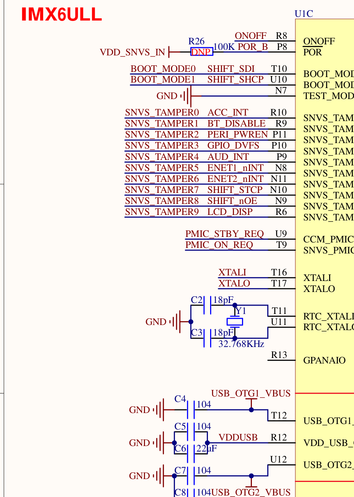
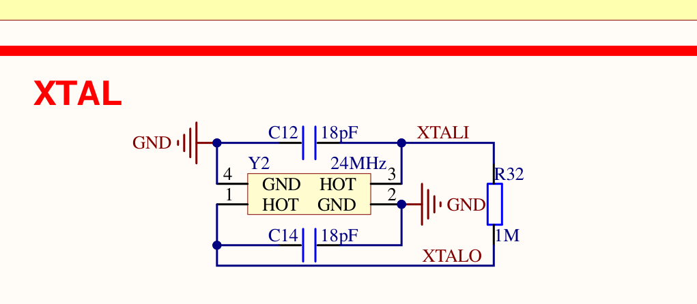

核心板第 6 页：ONOFF、POR、24MHz 与 32.768kHz
这一页（IMX6ULL_CORE_CONTROL.SchDoc）管「板子能不能起来」：开关键、复位监控、两颗晶振、启动模式脚、以及十个常电唤醒脚。它没有大芯片，全是小器件，但每一个都决定启动成败。核心问题有两个：24MHz 的负载电容为什么是 18pF、32.768kHz 为什么也是 18pF，以及 POR_B 到底由谁拉低。

新窗口打开读完这一章，你应该能
- 指出 ONOFF 与 POR_B 的区别：一个是「用户按键」，一个是「电源复位」
- 说出 MAX809R 在电路里的位置与它为什么用 0Ω 跳线连到 POR_B
- 用负载电容公式验证 24MHz 晶振的 18pF 取值，并解释 1MΩ 反馈电阻的作用
- 解释 32.768kHz 晶振为什么能做得又小又省电
- 说出 SNVS_TAMPER0–9 在本板上各自接到什么板级信号
3.7.1ONOFF 与 POR_B：两种「重启」
两个脚名字很像，作用完全不同：
| 脚 | 球 | 触发方式 | 结果 |
|---|---|---|---|
| ONOFF | R8 | 长按（内部有去抖/计时逻辑） | 进入或退出低功耗/关机流程，由 PMIC 与内核协商 |
| POR_B | P8 | 外部拉低（复位芯片/按键/ watchdog） | 整芯片硬复位，所有寄存器回默认，重新采样 BOOT |
本板 ONOFF 上有 R26 100K 上拉到 VDD_SNVS_IN，且标了 DNP（默认不贴）。为什么？因为 ONOFF 内部已有上拉，外部 100K 是「可选加固」：在电磁干扰强的场合贴上，保证不误触发；普通场合不贴以省电。这类标注是读图时最该留意的信息——看到 DNP 就知道「设计者预留了这个位置，但当前配置不用」。
3.7.2POR_B 由谁拉低：MAX809R 与按键
本页底部的 U2 MAX809R（SOT-23-3：GND=1、RST=2、VDD=3）就是复位监控芯片。它的工作方式极简单：
- VDD 低于阈值（R 后缀约 2.63V，按后缀表可查）→ RST 保持低；
- VDD 高于阈值并稳定一段时间（约 200ms 复位延时）→ RST 释放为高。
所以上电顺序是：DC5V 起 → 3.3V 起 → MAX809R 等 3.3V 稳定 → 释放 POR_B → SoC 开始采样 BOOT_MODE/BOOT_CFG → 取第一条指令。这条链上任何一环缺失，表现都是「串口一个字符都没有」。
RST 输出通过 0Ω 跳线（图上 R31/R33 两颗 0Ω）接到 POR_B 网络。0Ω 的用处：返工时可以断开复位芯片，改由底板按键或外部调试器控制复位。0Ω 不是「没电阻」，而是「可断开的导线」，读图时把它当导线看，但在故障分析时要记得它可能虚焊。
3.7.324MHz 主晶振：18pF 是怎么算出来的

新窗口打开晶振的「负载电容 CL」是它工作时看到的等效电容。无源晶振的标称频率是在指定 CL 下测的，常见规格 8/10/12/18pF。电路里两颗电容是串联看待（从晶振两端看，C12 与 C14 通过地串联）：
CL = C12·C14/(C12+C14) + Cstray = 18·18/36 + ~3pF = 9 + 3 = 12pF
两端各 18pF、加上约 3pF 的 PCB/引脚寄生，等效 12pF——所以本板选的晶振规格应是 12pF。如果换成 8pF 规格的晶振却仍贴 18pF，实际 CL 偏大，频率会偏低（典型灵敏度约 10–20ppm/pF），误差可达 −40~−80ppm，串口波特率随之偏移，表现为「能启动但串口乱码」。
R32 1M 的作用：CMOS 反相器的输入在晶振起振前处于高阻，1MΩ 把它偏置到线性区（约 VDD/2），提供初始增益，保证起振；同时它消耗的电流只有 3.3V/1M=3.3µA。没有这颗电阻，很多板子会「冷机不起振、热机正常」。
3.7.432.768kHz：RTC 的「秒针」
Y1 是 32.768kHz 音叉晶振，接 RTC_XTALI（T11）/RTC_XTALO（U11），两端 C2/C3 18pF。为什么不用 1M 反馈电阻？因为 RTC 振荡器是芯片内部专门设计的低功耗结构（内部已有偏置与 AGC），外部只需晶振 + 负载电容，驱动电流只有几百 nA 到几 µA。
32.768k = 215，用一个 15 位二进制计数器就能分出 1Hz，这是所有 RTC 都选它的原因。它的精度由晶振本身（±20ppm≈±1.7 秒/天）和负载电容匹配决定，所以 C2/C3 也必须按晶振规格选，不能随手用 18pF 就完事。
3.7.5SNVS_TAMPER0–9：十个「永不休眠」的脚
这一组脚在 SNVS 常电域，主电源关闭后仍能工作，本板把它们分配给了板级功能（这是真实映射，直接背下来很有用）：
| 脚 | 球 | 板级信号 | 用途 |
|---|---|---|---|
| TAMPER0 | R10 | ACC_INT | 车载 ACC 点火检测/唤醒 |
| TAMPER1 | R9 | BT_DISABLE | 蓝牙模块禁用 |
| TAMPER2 | P11 | PERI_PWREN | 外设电源使能 |
| TAMPER3 | P10 | GPIO_DVFS | 动态调压请求 |
| TAMPER4 | P9 | AUD_INT | 音频编解码中断 |
| TAMPER5 | N8 | ENET1_nINT | 以太网 1 中断 |
| TAMPER6 | N11 | ENET2_nINT | 以太网 2 中断 |
| TAMPER7 | N10 | SHIFT_STCP | 74HC595 移位寄存器锁存 |
| TAMPER8 | N9 | SHIFT_nOE | 595 输出使能 |
| TAMPER9 | R6 | LCD_DISP | 屏显示使能 |
注意 TAMPER 的「本来含义」是防拆检测（tamper），但在本板被当作普通常电 GPIO 用。读图时不要被名字限制——看它接到什么网络，比看球的名字更重要。
3.7.6BOOT_MODE 复用为移位寄存器
BOOT_MODE0（T10）、BOOT_MODE1（U10）除了复位时采样启动模式，还被复用成 SHIFT_SDI / SHIFT_SHCP——即 74HC595 的串行数据与移位时钟。原因很实际：启动模式只在复位瞬间采样一次，之后这两个球就自由了，正好拿来驱动底板上的移位寄存器（扩展 LED/继电器等输出）。
这种「一个球两种人生」的设计在本板反复出现（LCD_DATA 与 BOOT_CFG、CSI 与 USDHC2、NAND 与 SD2）。看懂的标志是：图上把两个网络名叠画在同一根线上，用空格分开。
3.7.7上电时序与实测
- DC5V 到位（量 MINI 底板 DCDC_5V）
- 3.3V 到位（量 CORE TP5 附近或 U8 输出）
- SNVS 3.3V 到位（TP4）——这一步不对，后面全白搭
- POR_B 由低变高（示波器看 P8 焊盘/测试点）
- 24MHz 起振（示波器 ×10 探头碰 XTALI，幅度约 1Vpp）
- DDR 1.35V 与 VREF 0.675V
- 串口出 uboot 打印
常见故障：POR_B 一直低 → MAX809R 的 VDD 没到或 0Ω 虚焊；24MHz 不起振 → 晶振贴反/负载电容错/R32 缺失；起振但频率偏 → 负载电容与晶振规格不匹配。